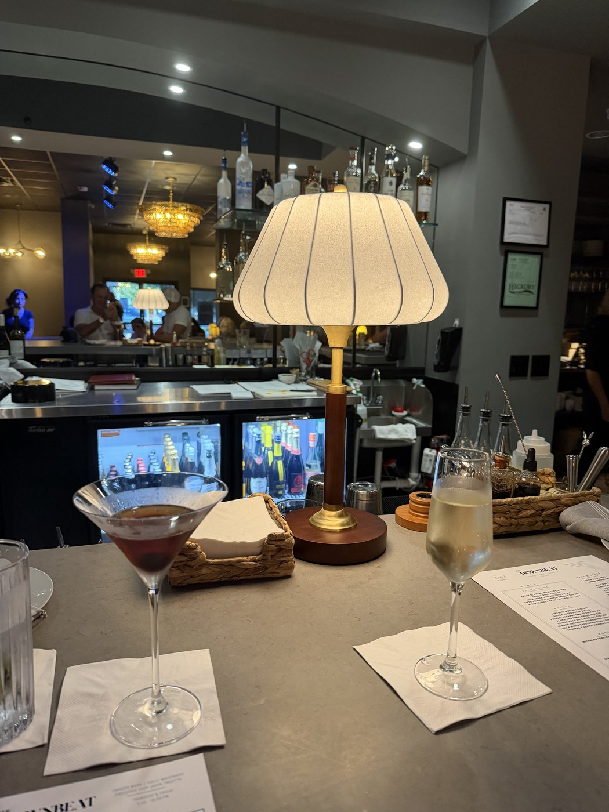
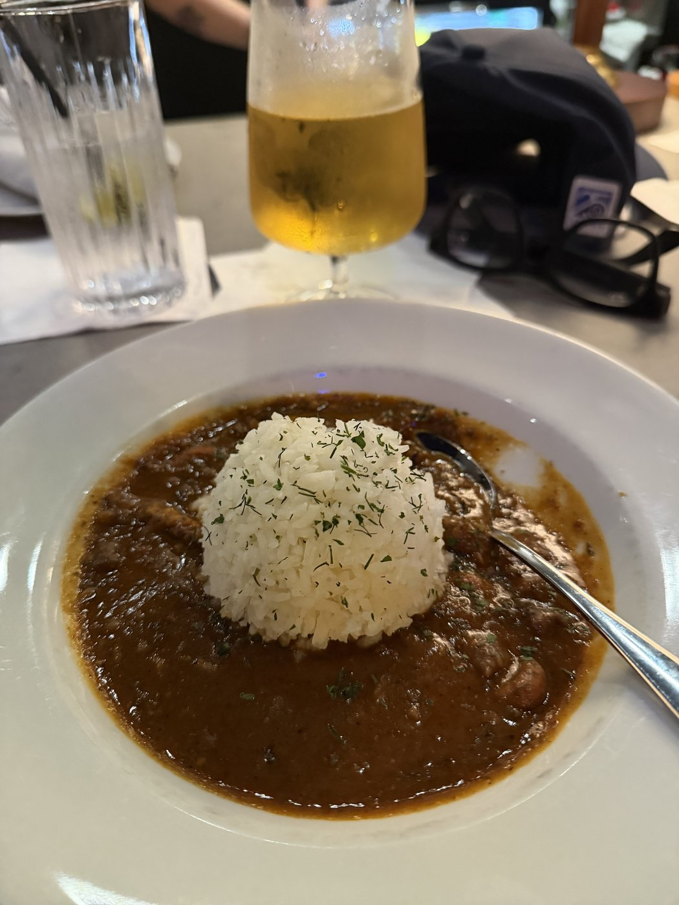

The Meg called me the day The Downbeat opened, back in May. Said Hickory finally had a jazz room and I needed to come down. She lives in town, makes things look better than they are for a living, and she's got a good ear, so when she keeps at something I eventually go. Took me a few weeks to get there, a Saturday in June.
The place sits on the square downtown, half an hour from the house, new enough that the paint still feels wet. Small room. Low light. A bar, a few little tables, a stage barely up off the floor. Records on the wall for sale and records playing soft when nobody's on the stage. The Meg had a table and a cocktail I couldn't have named, and she waved me over like she owned the place.

There was a chalkboard by the door for the off nights. Messenger Stage, it said, Sundays, open to whoever's got something to play. Stood there a second longer than I needed to. Whoever named it knew what they were doing. Blakey ran the Jazz Messengers for decades, and it was the room where the young ones got made before anybody knew their names. You don't hang that word over a stage by accident. Felt like a place that meant it.
Only catch is the Messenger Stage runs on Sundays, and Sundays at our place are already spoken for. Race on the TV, people in the kitchen, the screen door going all afternoon. So the night I'd most want is the one I can't get to. Figures.
Here's a thing most people who know me don't know. Jazz has been with me my whole life. Not the kind you put on to seem like something. The quiet stuff, the real stuff. Bill Evans on a Sunday with the lights off. Twenty-some years of the same handful of records going soft at the edges.
But it had always been records, because around here that was the only way to get it. A needle in a groove, the same notes in the same order every time, which is most of why I liked it. You know what's coming. You can always put it back to the start.

Then three guys walked up on that little stage and played, and it was not the record. Same tune, maybe, but they took it somewhere on the way through, and you could tell even they didn't know where until they got there. The piano said something and the bass answered it. Nobody looked at a phone. The whole room leaned in.
A record you can play again. This you couldn't. They finished and that exact version was gone, and the only place it lived after was in the room. Bothered me for a second, then it didn't. Some things you only get the once.
The Meg watched me through the whole first number instead of the band. When it ended she didn't say anything smart, which for her is a kind of compliment. Just ordered me whatever she was having and let me sit there.
Drove home with the windows down. Hands still had grease in the creases from the morning under the truck. Funny way to spend a Saturday, flat on my back under a '54 and then upright in a dark room letting a piano take its time. Both of them felt like mine.
Put a record on when I got back. Low, the same one as always. Good like it's always good. Just sat a little different after hearing the other kind.